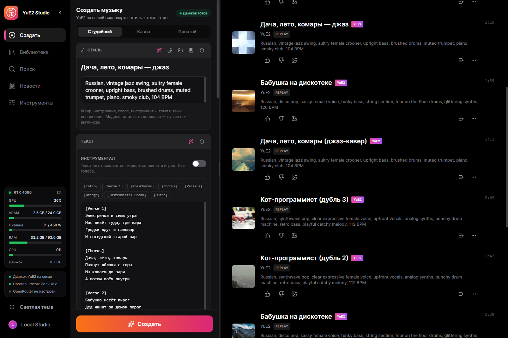
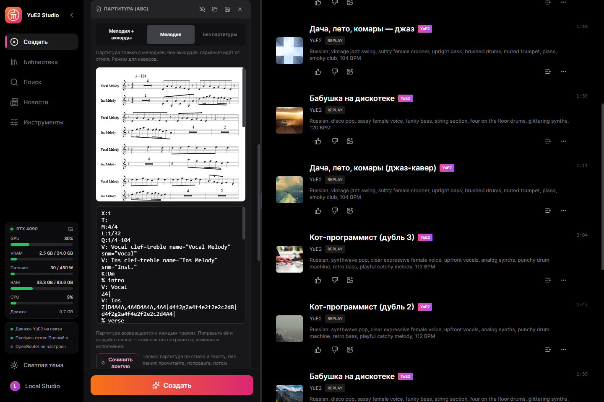
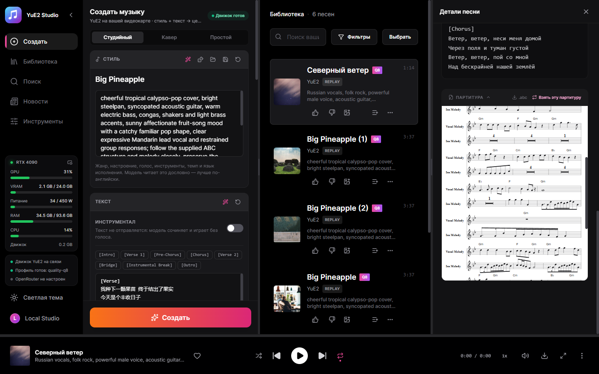
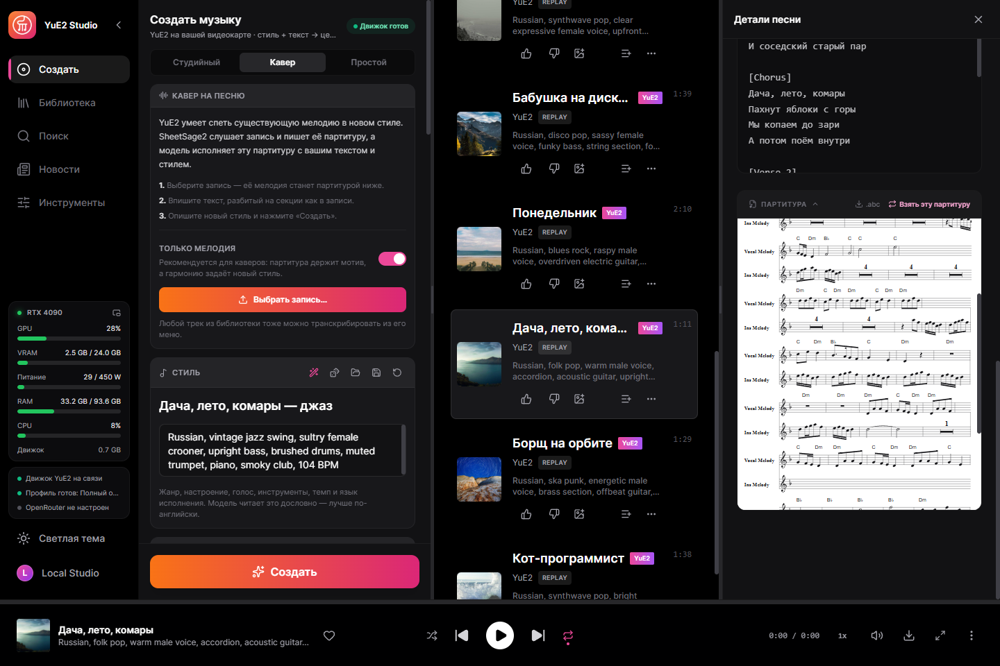
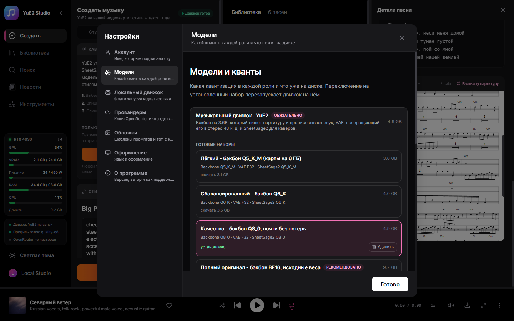

Целые песни с партитурой, которую можно править
Десктопная студия для YuE2 — открытой модели, которая сначала пишет партитуру, а потом поёт. Опишите стиль, напишите текст — модель сочинит мелодию с аккордами в нотах и исполнит её целой песней с вокалом. Партитуру можно прочитать, поменять и отрендерить ту же композицию с другим звуком. Один exe — без Python и лаунчеров.
Windows 10/11 x64 и видеокарта с 6 ГБ видеопамяти: NVIDIA (GTX 16 / RTX 20 и новее) через CUDA; AMD и Intel через Vulkan — экспериментально. Модели скачиваются из самой студии, когда вы решите.

Что умеет
Всё ниже работает на вашем компьютере, пока вы сами не подключите облачный ключ.
Целые песни
До шести минут по стилю и тексту. На RTX 4090 с набором Q8_0 песня в 3:38 рендерится примерно за 46 секунд.
Партитура, которую можно править
Композиция возвращается в нотации ABC и отрисовывается нотами. Поправьте и создайте снова: композиция остаётся, меняется исполнение.
Сначала партитура
Только партитура за секунды, ещё до пения: прочитайте, поправьте, потом создавайте. Аналог yue-plan из yue2.cpp.
Каверы
SheetSage2 записывает мелодию записи в партитуру, YuE2 поёт её в вашем стиле. Слова должны ложиться на эту мелодию: оригинальный текст или новый с тем же числом слогов в каждой строке и ударениями на тех же нотах, иначе пение съезжает с мелодии.
Точный повтор
Каждый трек хранит запрос и аудиокоды: отрендерить заново один в один или с другими шагами, новым сидом звука, несколькими вариациями.
110 готовых примеров
Наборы стиля, текста и партитуры из yue2.cpp, включая каверы, — загружаются одним кликом.
Помощник по текстам
Локальная Gemma или OpenRouter пишет стиль и текст по идее и правит партитуру по просьбе.
Караоке по словам
Расширенный LRC с меткой времени на каждом слове, выравнивание Parakeet или Whisper.
Стемы на видеокарте
Барабаны, бас, прочее, вокал, гитара и пианино — разделяет HT-Demucs.
Примеры
Сделаны на чистой установке с рекомендованным набором, как их сохранила студия. На английском, испанском, китайском, японском и русском.
English, funk disco, groovy male voice, slap bass, wah guitar, brass stabs, four on the floor drums, playful, 118 BPMEnglish, country, warm male baritone, acoustic guitar, pedal steel, fiddle, brushed drums, easygoing, 96 BPMSpanish, latin pop, bright female voice, nylon guitar, congas, piano montuno, bass, sunny danceable, 102 BPMMandarin, city pop, smooth male voice, electric piano, funky bass, clean guitar, drum machine, warm night mood, 108 BPMJapanese, j-rock, energetic female voice, distorted electric guitars, driving bass, fast drums, anime opening, 168 BPMRussian, folk pop, warm male voice, accordion, acoustic guitar, upright bass, 104 BPMRussian, vintage jazz swing, sultry female crooner, upright bass, brushed drums, muted trumpet, 104 BPMRussian, blues rock, raspy male voice, overdriven electric guitar, hammond organ, shuffle drums, 96 BPMRussian, disco pop, sassy female voice, funky bass, string section, four on the floor drums, 120 BPMRussian, ska punk, energetic male voice, brass section, offbeat guitar, fast drums, 150 BPMRussian, synthwave pop, clear expressive female voice, analog synths, punchy drum machine, 112 BPMRussian, upbeat pop-punk, energetic male vocals, driving distorted electric guitars, fast bass lines, crashing drums, rebellious and fun, 185 BPMСкриншоты
Сама студия — на этом языке.




Модели
Рабочий набор — бэкбон YuE2-3B и VAE; SheetSage2 необязателен и нужен только для каверов.
| Ваша видеокарта | Набор | Скачать |
|---|---|---|
| 12 GB+ | Полный оригинал — BF16, исходные веса | 9.7 GB |
| 8 GB+ | Качество — Q8_0, почти без потерь | 4.9 GB |
| 7 GB+ | Сбалансированный — Q6_K | 4.0 GB |
| 5.5 GB+ | Лёгкий — Q5_K_M | 3.6 GB |
Размеры с учётом SheetSage2. Студия сама предложит набор, который потянет ваша карта, но скачивание — всегда ваше решение. Каждый файл сверяется по SHA-256 с зафиксированной ревизией Hugging Face, прерванная загрузка докачивается.
Как начать
- Установить — запустите установщик или распакуйте портативный архив куда угодно.
- Выбрать набор — первый экран сам предложит, что потянет карта; скачается только недостающее.
- Написать — стиль и текст или загрузить пример; инструментал — один переключатель.
- Создать — движок запустится сам, песня попадёт в библиотеку вместе с партитурой.
Что где работает
По умолчанию всё локально. Облачный ключ добавляете вы — для той функции, которую выберете.
| Часть | Где работает | Размер |
|---|---|---|
| Движок YuE2 (yue2.cpp) | Видеокарта: CUDA, Vulkan или процессор | в комплекте |
| Набор моделей YuE2 | Ваша видеокарта | 3.6–9.7 ГБ |
| NVIDIA cuBLAS | Только карты NVIDIA | 391 МБ, один раз |
| Тайминги караоке — Parakeet или Whisper | Ваш компьютер | по желанию |
| Разделение на стемы — HT-Demucs | Видеокарта или процессор | по желанию |
| Помощник по текстам | Локальная Gemma или OpenRouter | по желанию |
Как устроено
Сервис вкомпилирован в десктопный exe и присматривает за движком на C++. Готовые песни импортирует сам сервис, поэтому результат не теряется при перезагрузке или закрытом окне.
React UI ─┐
├─ YuE2-Studio.exe (Tauri window + Rust/Axum service)
Rust axum ┘ │
└─ yue2.cpp `yue-server` (C++/CUDA, GGUF)
Приватность
Ваша музыка — ваша, и она остаётся на вашем диске.
Без аккаунта
Регистрироваться негде и незачем.
Без телеметрии
Студия никому не сообщает, что вы генерируете.
Облако — по желанию
Ничего не уходит с компьютера, пока вы не добавите ключ, и тогда только для этой функции.
Кто сделал
Nerual Dreming — художник, основатель ArtGeneration.me и сообщества Нейро-Картель, автор ACE-Step Studio и MiniMax Music3 Studio, из которых выросла эта студия.